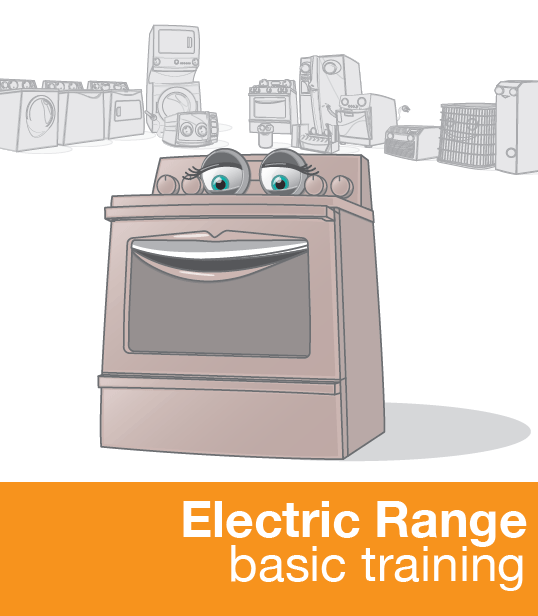
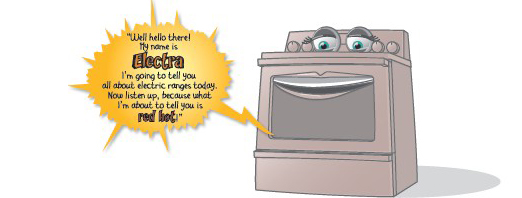
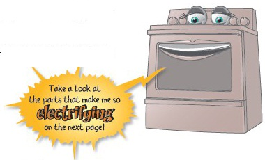
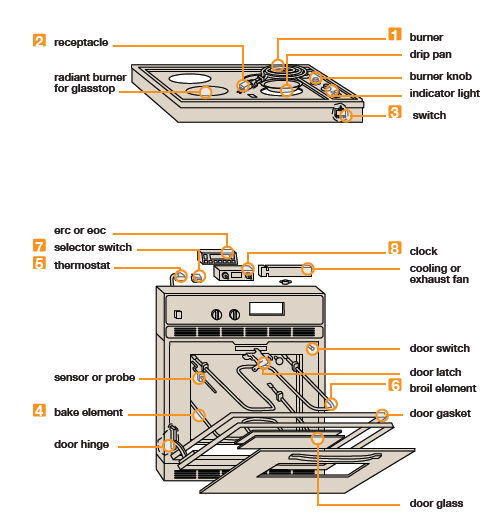
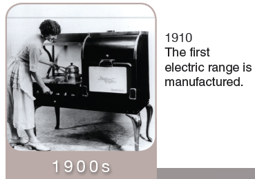
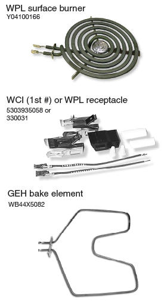
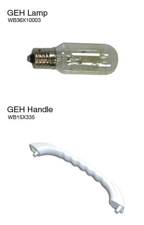

Electricrange Menu
menu
first, a little history

“As long as people have known how to harness electricity, they’ve been using it for heating and cooking. The Carpenter Electric Heating Manufacturing Co. invented the first electric stove in 1891, and in 1893 it was showcased at the Chicago World’s Fair where an electrified model kitchen was put on display. But it wasn’t until June 30, 1896, that a man by the name of William Hadaway was issued the first patent for the electric stove.”
“Gas stoves, like my older brother, have been around for some time, but the electric stove took a while to become popular. For starters, when electric stoves were first invented, only one in ten households were wired for electricity. Moreover, electricity was very expensive back then and the first electric stoves required a lot of it. Another problem with the early electric stoves was the short life span of their heating elements, that is, before the nickel-chrome alloy was invented that could better withstand the heat. By the 1930s, our technology had matured and we slowly began to replace the gas stove, especially in household kitchens (which was a major source of sibling rivalry as we were growing up). The first technology used resistive heating coils which heated iron hotplates, on top of which the pots were placed. As technology of electric ranges progressed, there was a major emphasis on convenience. For instance, in the 1950s one of the features of the Westinghouse Emperor range was a built-in cigarette lighter, and it came with a set of pans as standard equipment, now that’s convenient!”
“The big development in range cooking technology was the advent of the CalRod heating element, which was introduced at the end of World War I. This element consisted of a wire surrounded with a coating of fine sand and magnesium powder, incased in an aluminum tube. The big advantage of this design was that the electricity running through the wire was not conducted to the outer casing so it was insulated and waterproof. Now that’s hot!”
“The first electric range to use CalRod elements was built in 1928. The first self-cleaning oven was built in 1963, and in the 1970s glass-ceramic cooktops began to appear. The cooktops have a very low heat conduction coefficient, but they let infrared radiation pass very well. Cooktops use either electric heating coils or infrared halogen lamps as heating elements, and because of their physical characteristics, they heat quicker, give off less afterheat, and only the plate heats up while the adjacent surface remains cool. Also, glass-ceramic cooktops have a smooth surface and are easy to clean, but they only work with flat-bottomed cookware and are significantly more expensive. Today’s major appliance brands offer both gas and electric stoves, and many also offer dual-fuel stoves combining gas cooktops and electric ovens. So, you see, my brother and I have found a way to work together and get along after all.”
the most common parts
“Generally speaking, electric cooking is pretty simple. Here’s how it works... Electric stoves have a heater that you put a pot on top of called the burner. In almost all newer electric stoves this burner is plugged into a receptacle, located just beneath the stove top. The burner is controlled by a switch, which controls the amount of heat by turning the electricity on and off for certain amounts of time while you are cooking. Pretty simple right? Now, let’s talk about oven cooking.”
“We can cook in the oven two ways, either by baking or broiling. For baking, we use the heating coil at the bottom of the oven called the bake element. While baking, we control the temperature with the thermostat by turning the element on and off continually to get the right average temperature for cooking.”
“The other way we cook in the oven is by broiling, where food is placed directly under a heater at the top of the oven called the broil element. There is no temperature control here, so you have to watch your food to see that we don’t burn it up! If you do let it burn, don’t complain to your stove about it either, we’re just doing our job. Some ranges out there have a thermostat that is designed to control both functions, bake and broil, but most ranges just have the additional switch for the oven called the selector switch that allows you to select either bake or broil.”
“Now, I don’t know if you know, but some ranges are actually built with two ovens. That’s right, they are called double ovens. Ranges that have two ovens, will have two sets of controls, one set for each oven. When replacing parts in a double oven, it is important to know which oven you need the parts for since each one might be slightly different.”
“Did you know that some ovens can clean themselves?! That’s right, self cleaning is done by combining all of the oven components above to get the oven to heat up to a temperature of about 800 degrees for a certain length of time to burn the oven clean. There is also the addition of a locking system to keep the oven closed while it is at the high temperature. Another variation in electric ranges is the ‘Convection Oven’, which is basically a standard oven that has a combination of an additional heater and a fan to circulate the hot air, substantially shortening the time it takes to cook your food. My uncle is a convection oven; he is always bragging about how fast he can cook, as if he’s a microwave or something.”
“Today’s modern ranges are designed with convenience in mind, which is why we are equipped with a feature that allows you to set us to start automatically and cook your food for a pre-determined amount of time, and then shut off again. We do this by using a clock-timer. These days, our manufacturers are combining the functions of the thermostat, selector switch, and clock-timer into one electronic unit. This unit is called either the electronic range control (ERC) or the electronic oven control (EOC).”

the most common parts
the most common parts

the most common parts

the most common parts


the most common parts


on the wings of time


Evolution of the parts
“I have seen a lot of changes in my day. A big one is the design of the burner going from the spiral coil (much like a dryer element), to the Euro burner (which was encased in cast iron), to the newer designs using radiant and halogen technology. In the very early days of electric ranges’ burners consisted of a spiral coil under an iron cover, and later the CalRod element, a nickel-chrome alloy surrounded by a porcelain magnesium coating; both were wired right into the range itself. Some of the older electric ranges had burners called mono-tubes that were so thick you might as well have been talking to a brick wall they were so stubborn! I mentioned the glass-top ranges before; well some of them have a different type of burner called a radiant burner, which is basically a coil encased in a high-heat resistant housing allowing the heat to only radiate upwards. In the past there were generally only two sizes of burners, 6” and 8”. With today’s demands we are now being manufactured with burners in a variety of sizes from 4” to 10” and everywhere in between. Older stoves only had three to four burners, while some newer models can have up to ten, and that’s without even going to the commercial cooking category! I wouldn’t even know what to do with ten burners! Although burners last a lot longer now than they did in the early days, consumers can actually wear them out by sliding pans across them. Don’t do this, we don’t like it! What happens is it actually wears the coating off the burner to the point that the alloy wire is exposed, and boy, does this make us hot! With that wire exposed, it can cause a small explosion and sometimes even a fire. Do yourself a favor; be kind to your burners.”
“Receptacles really didn’t exist as a separate part until burners could be plugged in rather than hard wired into the range, sometimes surrounded by a glass or porcelain block. Usually the receptacle goes bad due to debris from cooking that causes arching between the burner and receptacle. Today, manufacturers recommend replacing the receptacle when a new burner is installed. Making sure the contact is complete between burner and receptacle will extend the life of the burner. You should always follow the doctor–I mean manufacturer-recommendations for keeping your appliances healthy and long-lasting.”
“Burner, or surface unit switches, work by turning the switch to high or low, increasing or decreasing the amount of electrical current flowing through the burner, thereby adjusting the temperature of the element. These switches are located on the control panel and can also be called ‘infinite switches’, since there are an infinite number of settings between low and high. On some ranges all the burner switches are the same, and on some models they are different according to the amperage the burner needs to operate. (Amperage refers to the amount of electricity.) The larger the burner, generally the higher the amperage. Some ranges get real fancy with an additional switch that allows the consumer to choose different sizes all in one burner. They could make a single burner be a 4”, 6”, or 8” just by making their selection to only heat up those turns on the burner, which adds an additional switch for selecting size.”
“Bake elements for the electric range are said to be the most even cooking in an oven as they cover more area in the bottom of the oven cavity. This is where my brother, the gas range, and I usually disagree, but he’s got his advantages too. Typically, the bake element goes bad due to spill-over of the food we are baking. The food lands on the bake element causing a small grease fire that burns through the coating and shorts out the element. On newer models coming out, manufacturers are now “hiding” the bake element under the bottom of the cavity to prevent these problems. Proves to be great for the consumer but, makes it tough on the technician to get in there and replace a bad one. Some bake elements are hinged to make it easier to clean up spills underneath. I have this friend who is always bragging about how clean her oven floor is and she insists her bake element is not hinged, but we all know the truth.”
on the wings of time


Evolution of the parts
“Before the invention of the Calrod element, coiled bake elements were placed under the floor of the oven cavity to prevent spillages on the coil elements that were then unprotected. Today, they are placing them there again and calling them ‘hidden bake elements’. Some people have asked me if there are such things as universal bake elements that all brands of ranges can use. Unfortunately, due to varying wattages, sizes, and shapes, each model has a specific element that will fit in it. Self cleaning ovens use a very high wattage element that allows them to get to the higher temperature required to burn off the residue inside the oven.”
“Oven thermostats haven’t been around forever, they weren’t invented until 1915, and first on gas ranges only. Electric ranges got thermostats approximately a decade later. The oven thermostat is located on the control panel with a long capillary tube extending from it, which runs down the back of the range and into the oven toward the top of the oven cavity. The capillary tube is what senses the temperature of the oven sending a signal back to the thermostat asking for more or less heat from the bake element to maintain the temperature selected. So basically, the thermostat turns the bake element off and on to maintain the temperature selected. Once the capillary tube has been bent or broken off, the thermostat will no longer function. On newer model ranges, the thermostat has been replaced with an electronic control board and a sensor, or probe, to cycle the bake element. The probe works on resistance caused by temperature change, rather than by temperature itself, sending an electrical signal back to the electronic oven control (EOC) or electronic range control (ERC). I’ll tell you what, you do not want to be around an aging electric range when her thermostat starts to go out, talk about inconsistent temperatures!”
“The broil element, as I mentioned earlier, is the element that is suspended from the ceiling of the oven cavity by a bracket or clip. Most ranges do not have any temperature control for broil although newer ranges may have a high, medium and low broil setting. Again this is done by cycling the broil element off and on much like the top burners and bake element, just by increasing or decreasing the electrical current according to the setting.”
“The oven selector switch allows the consumer to choose whether the oven will bake, broil, self clean or time bake. When these features first came out, our manufacturers had to come up with a way for us to tell the oven what to do without adding a separate part for each function, so they are all on one switch. Nowadays, for the most part the oven selector switch is being replaced by the electronic oven control (EOC) which is able to serve many functions.”
“In the beginning, the clock/timer was merely a clock and a minute timer combined; they had absolutely nothing to do with the actual working of the range. The early clock/timers were analog and the maximum time you could set was only about one hour. In today’s ranges, the clock timers, along with many other parts have been replaced by the ERC, bringing electric ranges into the digital age. Older clocks were rebuildable, you could actually get replacement parts for them, but that is not the case with the new electronic range control, where the whole thing must be replaced. Before ERCs, some of the newer clock/timers gave the consumer the option of ‘time bake’, where they could set the oven to come on and go off at certain times and to cook at a particular temperature. This was a great feature for the working woman, allowing her to come home to a cooked dinner; however, it raised food safety concerns because of meats being kept at unsafe temperatures until the oven came on. So, now they have an oven that keeps the food refrigerated until the oven begins to bake!”
“Electric ranges are all about convenience. We’ve come a long way from the old coil burners and simple switches, to halogen cooktop burners and electronic controls that allow you to pre-program your cooking. By the way, I have brought some diagrams so you can see how all the parts we discussed fit together.”
Parts on the Wings of time

Most popular electric range numbers to remember:


Reading parts Diagram
On the next several pages you will see a typical electric range breakdown containing the parts that you have learned. Knowing the appearance of the part and location on the range will help you identify it on a diagram. Most manufacturers present their “parts list and exploded view” in this type of diagram.
The diagrams are presented in a “facing the appliance” view, so when you are talking with a customer make sure that when they tell you where the item is located that they are facing the appliance, otherwise their left will actually be the right on your diagram. Many mistakes are made because of this.
Because the diagram is an “exploded view” parts are not exactly where they belong. Once you find the particular section the part should be located in use the lines or arrows to follow the part back to where it is actually mounted. This will help you determine if it is the part you are looking for..
Remember most parts do not include screws or trim, and most customers believe everything is included, so it is very important that you communicate with your customer exactly what you are seeing on the diagram. Also be aware of color; an example would be on page 9 in the diagram for the Cooktop parts, item #3 is the “Cooktop” itself and it lists three #3’s, one for white, black, and biscuit. Most customers are not aware that they need to tell you which color they need. Even the drip pans on this model come in colors. Asking the customer what color, when choices are given, will eliminate the guess work and ensure you send the right part the first time. On page 11 the diagram item #4 for the burner switch gives you four choices according to the location of the burner you need the switch for. On some descriptions you will notice a quantity in parentheses, usually that is an indication of how many are required on that model, not how many come with that part number. Asking secondary questions will allow you to get the customer all the parts needed to complete the repair the first time.
There are many differences between what the customer is seeing and what you see on the diagram. On the diagram you can not see color, size, or any small details that the customer may be using to describe the part. This is why using the location and what the part does may be your only way of locating the part needed. Although there are several websites that may give you a true to life picture of the part, you can not rely on that.
On many diagrams the manufacturer will offer parts as an assembly. They will indicate this by placing a dotted line box around several parts. If the parts have an item number they are available separately, if there is no item number they are only available as an assembly. Always give the customer the option of replacing the assembly rather than just the one part. This usually makes the repair easier and more complete.
Take a few minutes to identify some of the parts and their locations in the diagrams on the following pages. See if you can spot the eight major parts of the electric range.